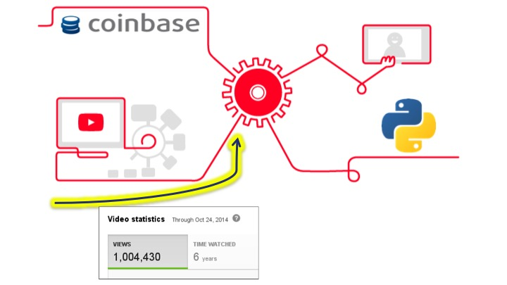
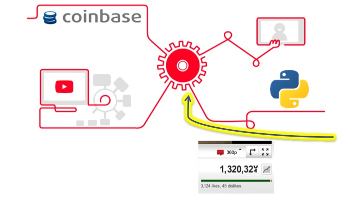
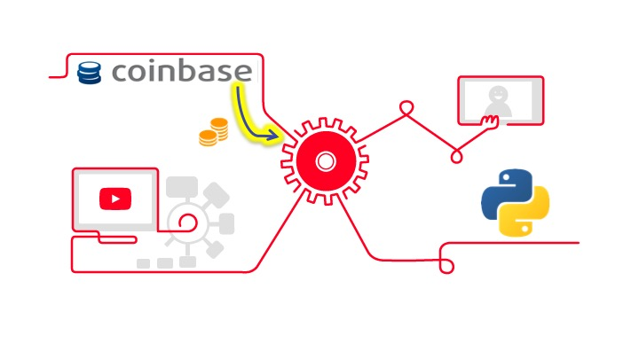
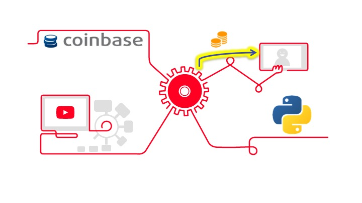
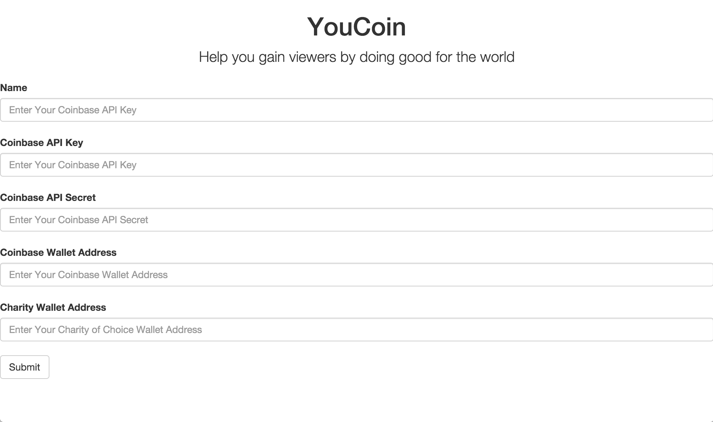

About
YouCoin is an experimental Python script that allows YouTube creators to donate a set amount of bitcoins to charity based upon how many viewers are active on their channel. It was created at HopHacks Spring 2016 by Linhchi Nguyen and Justin Chavez
How It Works
- Call YouTube Analytics API to obtain user's number of views 
- Use Python script to check if there is an increase in views 
- If there is an increase in views, call Coinbase API to access Coinbase wallet 
- Donate Bitcoins to user's chosen charity 
Future Directions
YouCoin is only available as a downloadable python script. What we envisioned and started to work on before was a web server hosted by Amazon Web Services. The website would include a form that YouTubers who wanted to run the program could fill out the form with the necessary API and bitcoin information. The Python program to count the views would run automatically on our server with no other regulation needed by the YouTuber. 
Other potential improvements for the YouCoin script include:
- Choosing how many views to accumulate before donating
- Allowing bitcoins to be donated from other viewer actions (likes, subscriptions, etc.)
- Allowing the YouTuber to type in YouTube and Coinbase usernames and passwords instead of API keys and secret files
We mainly list future directions here to spark any idea for a use with YouCoin within the viewers of the page and for our own organization. Please contact linhchib.nguyen@gmail.com or justin.chavezz22@gmail.com to get in touch with us about YouCoin